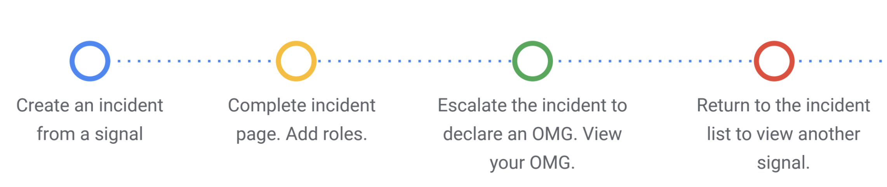
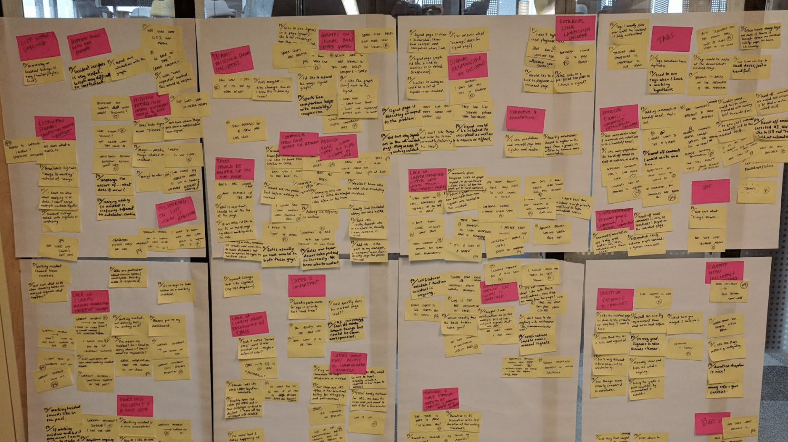
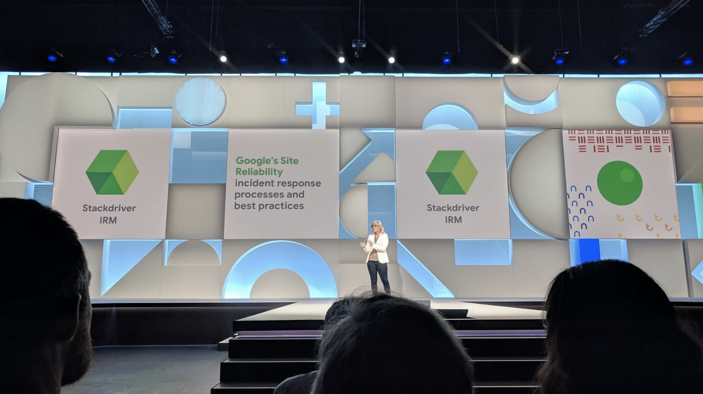

IRM was an initiative to improve the fragmented process of responding to incidents. I lead the design of this initiative and supported three engineering squads across there different time zones.
Google's incident response tools lacked design cohesion and cross product integration. This required context shifts and sustained cognitive load during stressful scenarios for the engineers responding to the incident. IRM replaced and combined the collection of tools previously used and unified the incident triage process.

During the whole process of designing IRM, we needed to be open and transparent. It was critical that we got buy in as this would become the tool used at Google for dealing with incidents.
Understanding how engineers moved through the incident response process and aligning that to the existing landscape of tools uncovered just how much toil there was in the process. It also highlighted how complicated it was to get a true picture after resolution as information was scattered.

With a focus to distilling down the process and tackling the major issues uncovered during the discovery phase, there were four key elements that would help improve the mitigation of incidents. Actioning the initial signal, assigning roles to tackle the issue, escalating if needed, and building up context with additional signals.
The teams hypotheses going into testing was that there was going to be a clear divide between the two main types of engineers at Google, SREs (site reliability engineers) and SWEs (software engineers).
However it turns out there is a lot more variety based on the types of services a SRE and SWE work on and are on call for.
The team focused on rapid iterative test cycles to maximize transparency and to ensure we were building the right tool. This helped keep engineers at Google aware of what we were up to, and involved in the process.
To share out with the IRM team, I would create clear testing protocols which highlighted what we were testing this cycle, why we were testing it and what we hoped to understand.
After every user testing cycle, the team would get together to affinity sort the findings.
An interesting finding from the research was insuring that we kept the topology of the IA low. This helped traversing the various different signals of an incident easier and allowed IRM to be easily learned by both SREs and SWEs.
IRM went through a lot of iteration as emphasized from the user research. The first few major milestones ended up focusing on the wrong thing. Initially it was just a redesign and mash up of the existing tools which just exacerbated the problems by having a fragmented incident response process.
Another good example of the designs taking us in the wrong direction was essentially creating a form for engineers to fill out, which is no what someone on call wants to be doing in the middle of an incident.
Where we arrived was an action based workflow similar to how someone would action their emails. Signals that allude to potential issues would arrive in IRM, then these would be reviewed and actioned in a linear fashion to help keep the current state of the product you're on call for clean. Additional signals can be added to either existing or new incidents and all the findings and communication lives in one place.
The IRM UI was built using the GME design system, which was built and designed by Darren Head. As a wider team, looking into the components that Google Material had available, and adding the lens of how they should live in an enterprise setting. Focusing on density, and technical information helped create a design system that worked for our context.
I worked on IRM through the entirety of its adoption at Google. Working from 0% to it being the standard tool at Google for incident response. Adoption will never reach true 100% due to issues being resolved before they are seen in IRM.
IRM went through a lot of iteration as emphasized from the user research. The first few major milestones ended up focusing on the wrong thing. Initially it was just a redesign and mash up of the existing tools which just exacerbated the problems by having a fragmented incident response process.
Another good example of the designs taking us in the wrong direction was essentially creating a form for engineers to fill out, which is no what someone on call wants to be doing in the middle of an incident.
Early on in the process, the team got together to run a premortem. The goal was to alleviate potential risks ahead of time. The main topic that came out of the session was there was too much knowledge within a select few individuals. This sparked off lunch and learns to help share this knowledge.